La ligne colorée en haut de chaque groupe = la configuration Purchasely
Pour chaque écran (ou suite d'écrans), elle indique à quel moment il apparaît et ce qui se passe ensuite. La couleur identifie un placement ; le gris « Natif » = un écran géré par l'app, hors Purchasely.
L'idée clé : c'est l'app qui sait où en est la personne (cadeau déjà récupéré ? temps gratuit restant ?) et qui choisit, selon ça, quel écran déclencher.
Couche Purchasely · configuration des placements
👉Cliquez sur les écrans pour les voir en grand
NatifÉcran de démarrage, géré par l'app
● Lancement
À venirrendu Claude Design
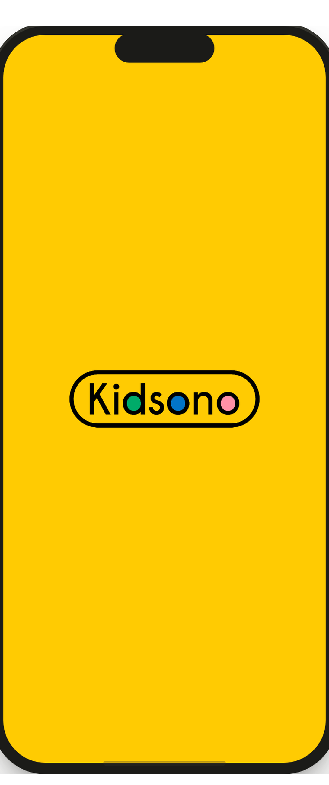
01 · Splash
Logo seul
- UX : un seul signe et du vide, le restraint fait le premium (convergent chez Noom, Aumio, Storytel)
- Psycho : on ne vend rien ici, vendre avant d'avoir posé la marque fait fuir
- Rythme : splash volontairement au plus bas pour réserver le pic de couleur au claim (montée du désir)
→
Flowonboarding
▶ Apparaît à la toute première ouverture de l'app
Ensuite → l'app ouvre le catalogue
● Accroche · claim
⏸ En attente · décision Kidsono
À venirrendu Claude Design
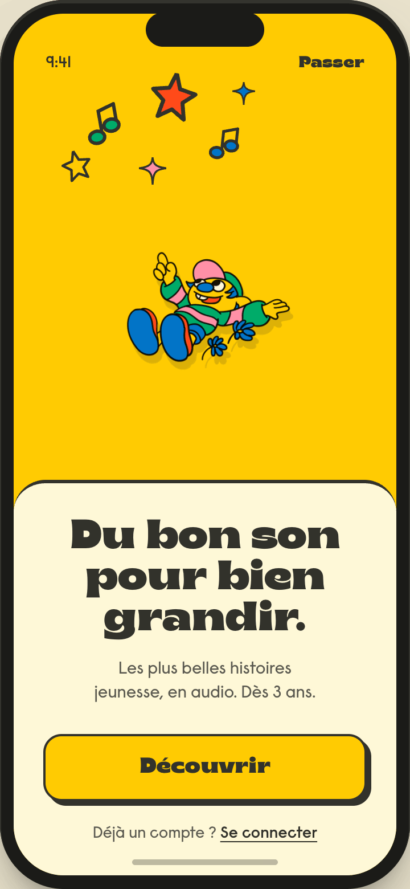
02 · Accroche
Le 1er pic
- Positionnement : la signature "Du bon son pour bien grandir" dit qui on est, au lieu d'un superlatif vide non prouvable ("la meilleure app")
- Psycho : le pic émotionnel coloré ancre la marque par l'émotion avant toute demande
- UX : le carrefour "Déjà un compte ?" évite le mur "tu n'es pas connecté" qui bloquait les revenants
En attente de la décision de l'équipe Kidsono : conserve-t-on cet écran de claim ? S'il est retiré, le flow onboarding démarrera directement au premier écran du carrousel.
→
● Proposition de valeur · le carrousel
À venirrendu Claude Design
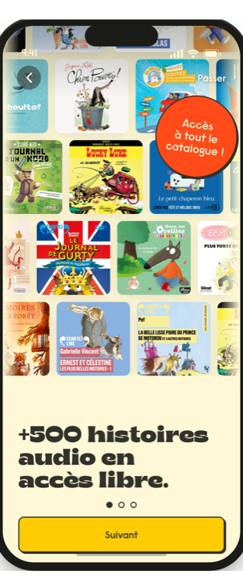
03 · Catalogue
Le catalogue
- Psycho : le « 500+ » chiffré et les vraies couvertures prouvent par le concret, plus fort qu'une promesse pour une marque sans notoriété
- Business : la pastille « tout le catalogue » pose la valeur que l'abonnement débloquera (wording à border pour ne pas laisser croire que tout est gratuit)
À venirrendu Claude Design
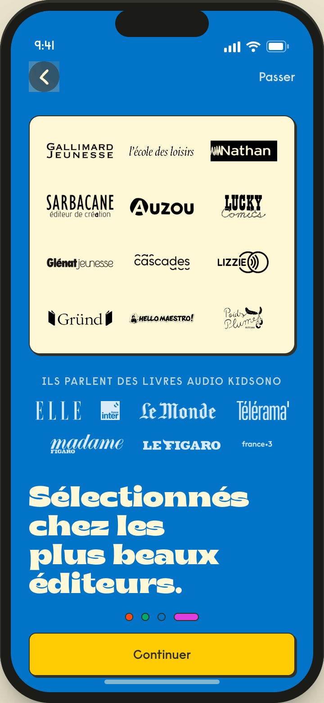
04 · Autorité
Le mur des éditeurs
- Confiance : la masse de logos éditeurs fait caution, au moment précis où une marque inconnue doit prouver sa légitimité
- Rythme : le fond vert (changement de couleur) signale ce beat de preuve, sans répéter le carrousel
- Business : on emprunte la notoriété des éditeurs faute de notoriété propre
ℹ Possibilité de varier la couleur sur cet écran.
Variation 1 possible (voir aussi 2e ci-dessous)
À venirrendu Claude Design
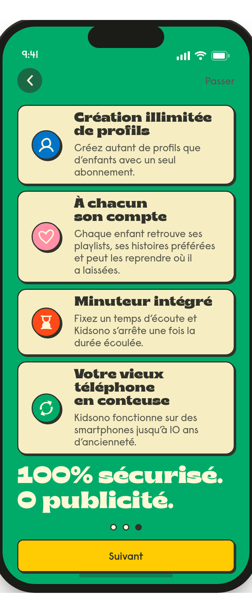
⚠️ @Benoist Il n'est pas évident d'appliquer ici les zones de couleur de la version mobile web de la landing page (certains designs sont spécifiquement web, pas forcément en accord avec le design system app mobile de Kidsono).
05 · Sécurité
Sûr & sans pub
- Confiance : « 100% sécurisé, zéro pub » lève l'angoisse n°1 du parent, le quick win de confiance que le marché FR néglige
- Déculpabilisation : minuteur, ergonomie petits et mode avion couvrent les usages réels (voiture, avion, vieux mobile recyclé) et désamorcent le sujet du temps d'écran
Variation 2 possible (ci-dessous)
À venirrendu Claude Design
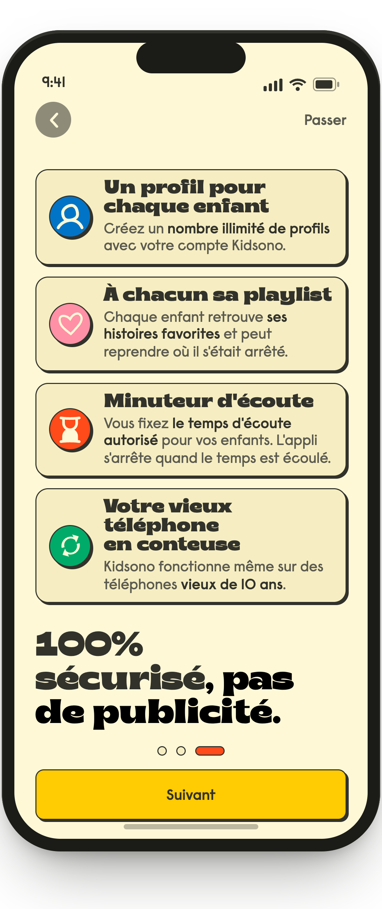
→
● Annonce du cadeau
À venirrendu Claude Design
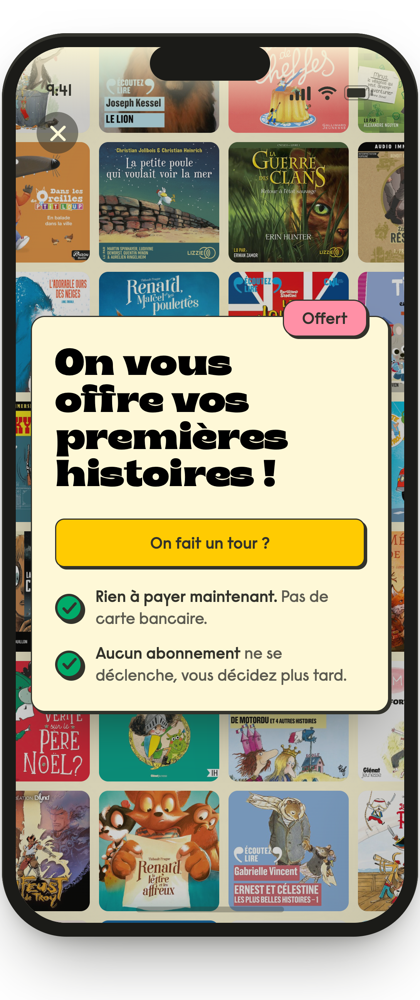
07 · Annonce
Le cadeau de bienvenue
- Teasing : dès l'entrée dans le catalogue, une carte « cadeau de bienvenue » présente les premières histoires offertes, sans rien demander, elle met en appétit sans bloquer
- Confiance : « rien à payer, pas de carte, aucun abonnement, sans publicité » lève d'emblée l'anxiété du piège, et l'Éducation nationale surlignée pose la caution
- Conversion : « Écouter maintenant » amorce l'envie, le déblocage réel (création de compte) se joue ensuite, au moment d'écouter
L'utilisateur entre dans le vrai catalogue sans créer de compte
NatifLe catalogue de l'app, exploré librement
● Exploration libre · sans compte
capturecatalogue de l'app
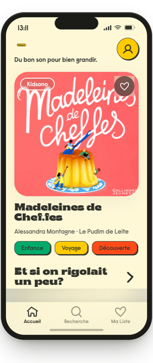
Catalogue
Navigation libre
- Conversion : le catalogue réel fait la vente mieux qu'un argumentaire, on laisse le contenu convaincre avant de demander quoi que ce soit
- Friction : zéro mur à l'entrée, on supprime l'abandon des curieux qui ne veulent pas s'inscrire pour "juste voir"
capturefiche histoire de l'app
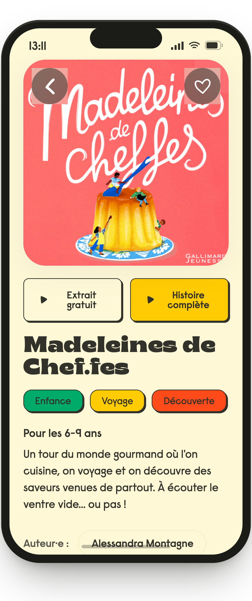
Fiche histoire
Extrait gratuit
- Psycho : l'extrait gratuit fait goûter sans engager, l'envie d'entendre la suite devient le moteur de l'inscription
- UX : deux portes claires sur la fiche, "Extrait gratuit" (libre) et "Histoire complète" (qui déclenche le mur)
▼ Ce qui déclenche le mur d'activation
▶ Un clic sur "Histoire complète"
⏹ La fin d'un extrait gratuit
→
Écranactivation_gate
▶ Au lancement d'une histoire ou en fin d'extrait, tant que le cadeau n'a pas été récupéré
Ensuite → création de compte
MUR 1 · GRATUIT Activation : la modale cadeau
À venirmodale (en conception)
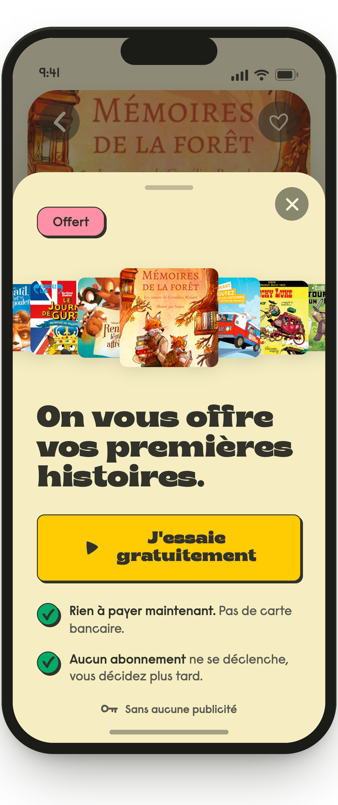
Mur 1 · activation
Modale au moment d'écouter
- Conversion : on demande le compte à l'instant précis d'intention maximale (l'utilisateur veut écouter CETTE histoire), pas avant, ce qui maximise le taux de création de compte
- Psycho : "sans carte, rien ne se déclenche", le compte sert à débloquer un cadeau, pas à payer, l'inscription est vécue comme un gain et non comme un péage
- Business : les ~30 min offertes sont aux frais de Kidsono, coût d'acquisition assumé pour amorcer l'habitude et capturer l'e-mail
OK → on crée le compte, puis on personnalise
Écranaccount_creation
▶ Apparaît quand on appuie sur « Essayer gratuitement »
Ensuite → connexion Apple ou Google
● Création de compte
À venirrendu Claude Design
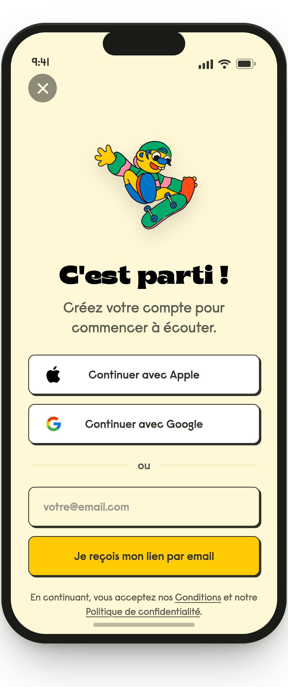
08 · Compte
Création de compte
- Friction : Apple/Google = 1 tap au lieu de saisir un email et attendre, moins d'abandon au moment-clé du déblocage
- Standard : le SSO est absent du segment FR enfant, l'ajouter place Kidsono au-dessus du marché local
- UX : écran gardé léger (pas de logo redondant avec l'illustration) pour ne pas alourdir l'inscription
NatifSaisie du code reçu par e-mail
● Vérification
À venirrendu Claude Design
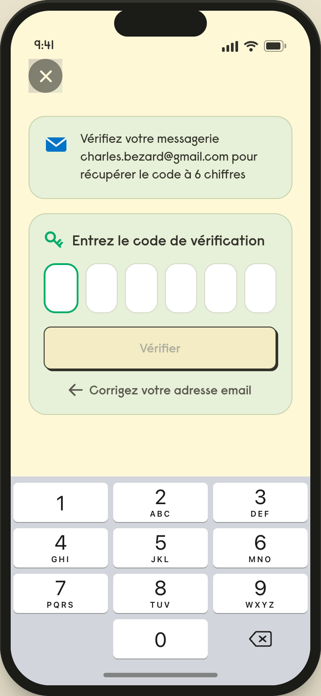
09 · Compte
Saisie du code
- Compréhension : on garde le mot "lien magique" que les gens connaissent, même si techniquement c'est un code, le wording prime sur l'exactitude
- Tech : le système de code existant est conservé pour ne pas charger le CTO (réalignement visuel à la DA plus tard)
→
NatifChoix du profil de l'enfant
● Profil et personnalisation
À venirrendu Claude Design
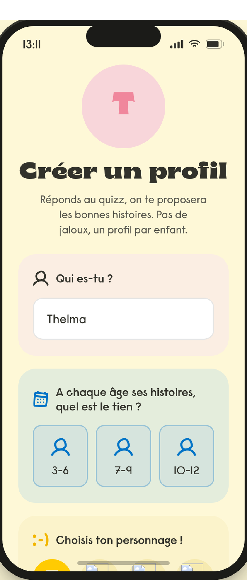
10 · Profil
Profil et perso.
- UX : la perso vient APRÈS le compte, configurer l'enfant une fois connecté évite de bloquer l'entrée
- Rétention : un profil par enfant prépare des recommandations à sa hauteur (réusage)
- Friction : multi-profil optionnel (skippable) pour ne pas alourdir l'inscription
→
Cadeau débloqué : écoute gratuite (~30 min), répartie sur plusieurs jours, dans le profil de l'enfant.
▼ Ce qui déclenche le mur payant (l'un de ces cas)
⏱ Le temps gratuit est épuisé
⏸ L'enfant est arrêté en plein milieu d'une histoire
▶ Un clic sur "Lecture" alors qu'il ne reste plus de temps gratuit
→
Flowpaywall
▶ Apparaît quand le temps gratuit est dépassé pendant l'écoute, ou quand on relance une histoire une fois le cadeau épuisé
Ensuite → s'abonne : tout le catalogue s'ouvre · ferme : il reste les extraits gratuits
MUR 2 · PAYANT Conversion · le paywall
À venirrendu Claude Design
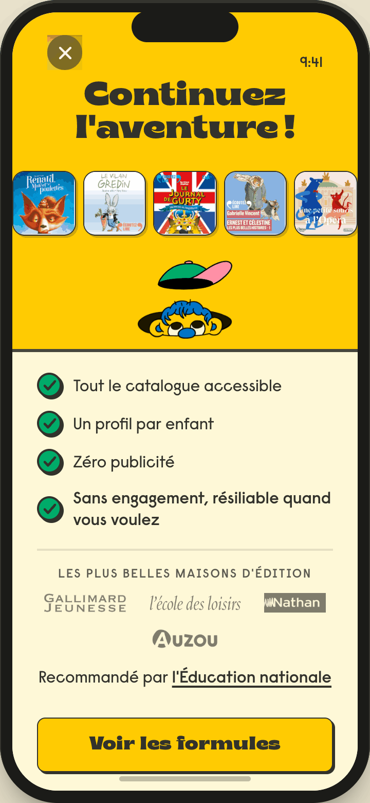
11 · Paywall
La valeur (le pic)
- Psycho : le mur de couvertures matérialise la perte ("voilà ce que vous ratez"), levier d'aversion à la perte au moment de décider
- Confiance : autorité + Éducation nationale ici, le signal de confiance a son effet maximal à l'instant de payer
- Rythme : 2e pic visuel (pic en haut, prix au calme en bas), un paywall doit "péter" sans noyer les prix
À venirrendu Claude Design
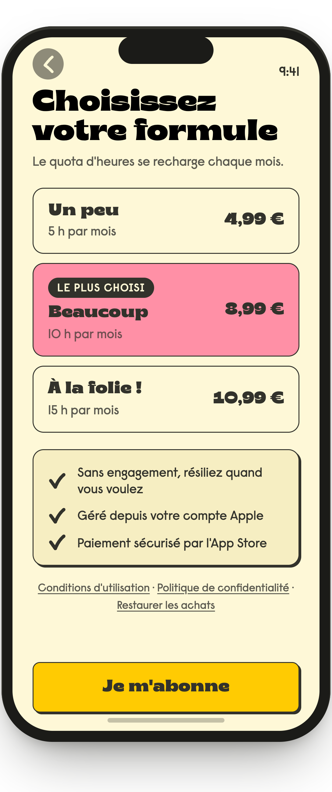
12 · Paywall
Choix du palier
- Décision : formules nommées par l'usage ("pour la maison") pour aider le parent à se projeter plutôt qu'à calculer des heures
- Conversion : la formule recommandée présélectionnée sert d'ancrage, on guide sans forcer
- Confiance : les 3 garanties juste avant le paiement, la réassurance culmine à l'instant de sortir la carte
AppleFenêtre de paiement d'Apple
● Modale Apple
À venirrendu Claude Design
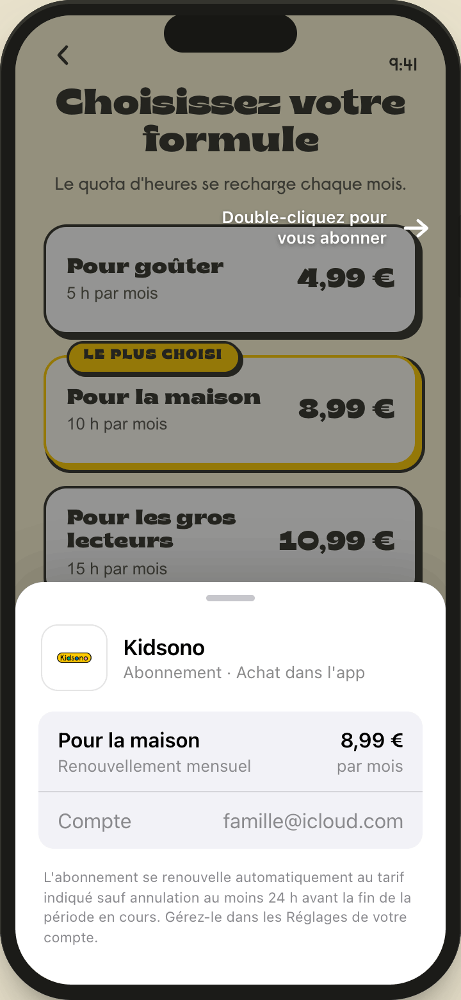
13 · Paywall
Modale Apple
- Friction : le CTA ouvre direct la modale native, pas d'écran de confirmation maison, chaque écran en plus = de l'abandon
- Confiance : paiement géré par Apple, pas de carte saisie dans l'app, résiliation centralisée
→
👑 S'abonneAccès complet à tout le catalogue
✕ Ferme ou refuse (n'importe quel écran du paywall)Accès limité : extraits uniquement
↺ Depuis l'accès limité, un clic sur "Lecture" rouvre le paywall